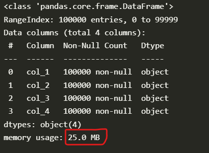
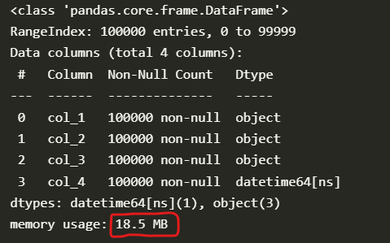
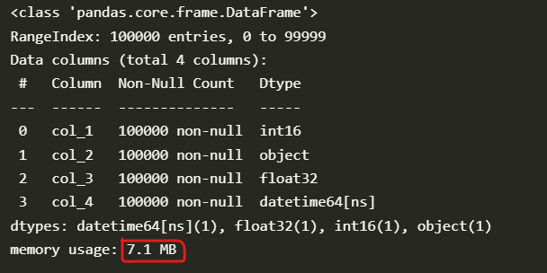
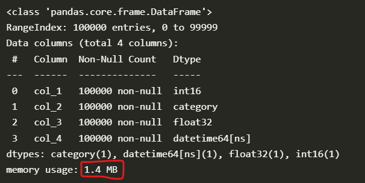
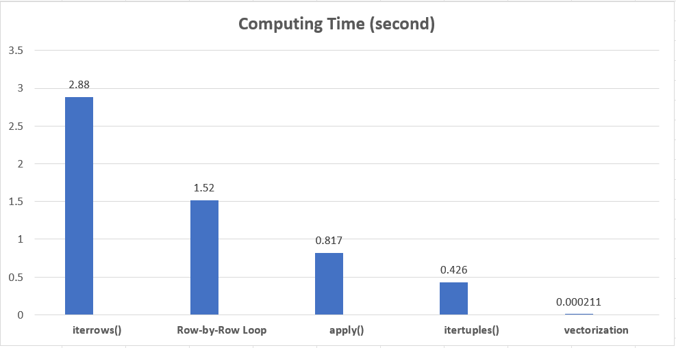
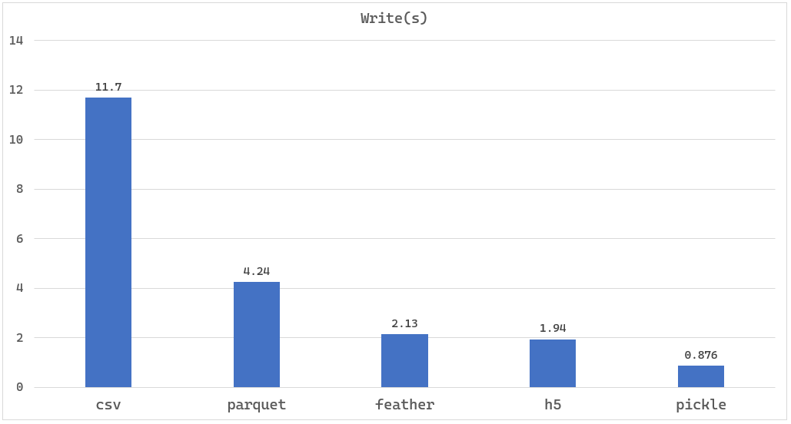
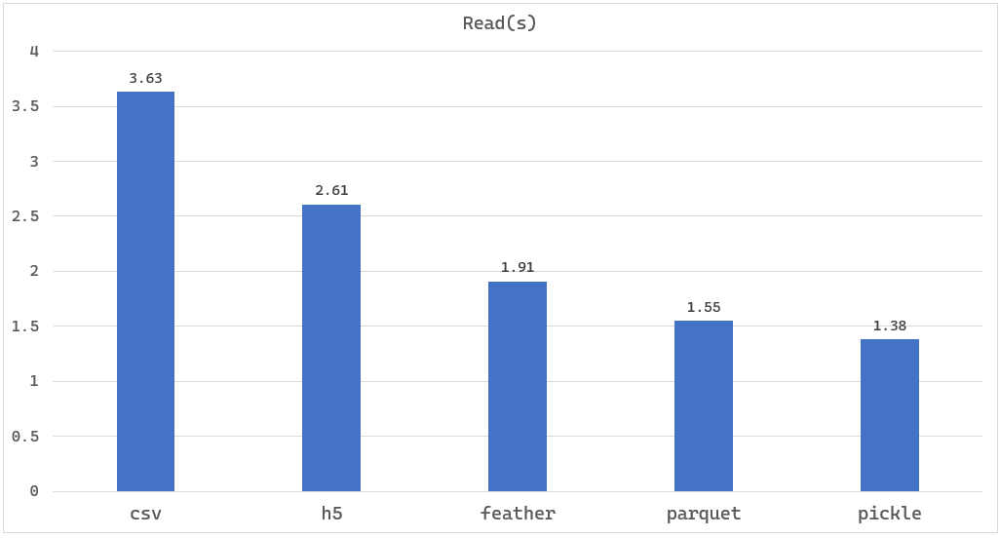

Pandas >> Optimization
Table of Contents
In this article, let’s go through some optimization techniques in Pandas together.

Data preparation
In order to produce sufficient difference after optimization, we need to prepare enough data.
Here, we create a DataFrame with 100,000 rows.
import pandas as pd
df = pd.DataFrame(
[
["123", "abc", "123456.78", "2022-01-02 01:02:01"],
["234", "def", "223456.78", "2022-02-03 02:03:02"],
["567", "ghi", "323456.78", "2022-03-04 06:04:03"],
["890", "jkl", "423456.78", "2022-04-11 12:05:04"],
["123", "mno", "523456.78", "2022-05-25 19:06:05"],
] * 20000,
columns=["col_1", "col_2", "col_3", "col_4"]
)
len(df)
100000
We generated 100 thousand rows.
Memory
Firstly, let’s go through some memory-related optimization techniques.
All the columns of the data prepared above are strings.
Memory usage: 25.0MB.
df.info(memory_usage='deep')

string -> datetime
Let’s convert the col_4 to the date-time type (Timestamp).
Memory usage: 18.5MB
Reduction: 6.5MB(26%)↓.
df["col_4"] = pd.to_datetime(df["col_4"])
df.info(memory_usage='deep')

string -> number
Next, let’s convert col_1 to integer, and convert col_3 to float.
Memory usage: 7.1MB
Reduction: 17.9MB(71.6%)↓.
import numpy as np
df = df.astype({"col_1": np.int16, "col_3": np.float32})
df.info(memory_usage='deep')

string -> category
We can convert the columns with a finite number of possible values to category type.
Memory usage: 1.4MB
Reduction: 23.6MB(94.4%)↓.
df["col_2"] = df["col_2"].astype("category")
df.info(memory_usage='deep')

To recap, the memory size is reduced by 94.4% by converting data types.
For more about data type conversions, you can reference the article below.
Pandas » Data Type Conversions
https://thats-it-code.com/pandas/pandas__data-type-conversions/
Computing
For example, we want to add up col_1 and col_3 and assign the result to a new column named total.
We can achieve this in the following 5 ways.
- General Row-by-Row Loop
- iterrows()
- itertuples()
- apply()
- vectorization
General Row-by-Row Loop
Firstly, let’s loop the data row by row and add col_1 and col_3.
# Copy the DataFrame to keep the original DataFrame unchanged
temp_df = df.copy()
# List to store the computing results.
new_col = []
# Calculating execution time
%%timeit
for i in range(len(temp_df)):
# Save the computing result of each row to a list
new_col.append(temp_df.loc[i, "col_1"] + temp_df.loc[i, "col_3"])
# Assign the result to a new column named total
temp_df["total"] = pd.Series(new_col)
1.52 s ± 17.7 ms per loop (mean ± std. dev. of 7 runs, 1 loop each)
iterrows()
Next, let’s use the iterrows() method of DataFrame to loop the data.
iterrows() will yield row index and row Series object each time.
# Copy the DataFrame to keep the original DataFrame unchanged
temp_df = df.copy()
# List to store the computing results.
new_col = []
%%timeit
for i, row in temp_df.iterrows():
new_col.append(row["col_1"] + row["col_3"])
temp_df["total"] = pd.Series(new_col)
2.88 s ± 36.7 ms per loop (mean ± std. dev. of 7 runs, 1 loop each)
itertuples()
Next, let’s use the itertuples() method of DataFrame to loop the data.
itertuples() will iterate over DataFrame rows as namedtuples.
# Copy the DataFrame to keep the original DataFrame unchanged
temp_df = df.copy()
# List to store the computing results.
new_col = []
%%timeit
# By default, index=True -> for index, row in ...:
for row in temp_df.itertuples(index=False):
new_col.append(row[0] + row[2])
temp_df["total"] = pd.Series(new_col)
426 ms ± 138 ms per loop (mean ± std. dev. of 7 runs, 10 loops each)
apply()
We can also use apply() method of DataFrame to reach our goal.
# The function definition to be applied
def print_col(row):
return row["col_1"] + row["col_3"]
# Copy the DataFrame to keep the original DataFrame unchanged
temp_df = df.copy()
%%timeit
# axis=1 means apply this operation on all rows.
temp_df["total"] = temp_df.apply(print_col, axis=1)
817 ms ± 2.23 ms per loop (mean ± std. dev. of 7 runs, 1 loop each)
vectorization
Finally, let’s use the built-in method to add two columns.
# Copy the DataFrame to keep the original DataFrame unchanged
temp_df = df.copy()
%%timeit
# Use the built-in adding operation
temp_df["total"] = temp_df["col_1"] + temp_df["col_3"]
211 µs ± 3.7 µs per loop (mean ± std. dev. of 7 runs, 1,000 loops each)
Let’s summarize all the results.
As the test results show, the fasted way is the vectorization. So let’s use the built-in operations as much as possible.
If we have to loop row by row, itertuples() should be used first.
itertuples() is much faster than iterrows(). In this test, itertuples() is almost 7 times faster than iterrows().
apply() is slower than itertuples(), the Row-by-Row loop and iterrows() is very slow and we should avoid using them.

I/O
Next, let’s compare the I/O performance of various file formats.
To compare the writing and reading performance, we create a DataFrame with 1000,000 rows and 50 columns.
df = pd.DataFrame(
[
["abc123"]*50,
] * 1000000,
columns=[f"col_{i}" for i in range(1, 51)]
)
Writing files
Let’s compare the writing performance first.
To write the h5 file, we need to install the tables library.
pip install tables
To write the parquet file, we need to install pyarrow or fastparquet.
Here we will install the pyarrow library.
pip install pyarrow
Well, let’s start comparing.
%%timeit
df.to_csv("data/100000rows-data.csv", index=False)
11.7 s ± 190 ms per loop (mean ± std. dev. of 7 runs, 1 loop each)
%%timeit
df.to_pickle("data/100000rows-data.pkl")
876 ms ± 20.5 ms per loop (mean ± std. dev. of 7 runs, 1 loop each)
%%timeit
df.to_hdf("data/100000rows-data.h5", key='df', mode='w')
1.94 s ± 93.6 ms per loop (mean ± std. dev. of 7 runs, 1 loop each)
%%timeit
df.to_parquet('data/100000rows-data.parquet.gzip', compression='gzip')
4.24 s ± 19.4 ms per loop (mean ± std. dev. of 7 runs, 1 loop each)
%%timeit
df.to_feather('data/100000rows-data.feather')
2.13 s ± 14.8 ms per loop (mean ± std. dev. of 7 runs, 1 loop each)
Let’s see the result in a chart.
We will find CSV format takes the longest time and pickle takes the shortest time.
So if the output file format doesn’t matter such as intermediate results, we should use the pickle or the h5 file to speed up the writing.

Reading files
Similarly, let’s compare the reading performance of the 5 file formats mentioned above.
%%timeit
pd.read_csv("data/100000rows-data.csv", header=0)
3.63 s ± 184 ms per loop (mean ± std. dev. of 7 runs, 1 loop each)
%%timeit
pd.read_pickle("data/100000rows-data.pkl")
1.55 s ± 65.7 ms per loop (mean ± std. dev. of 7 runs, 1 loop each)
%%timeit
pd.read_hdf("data/100000rows-data.h5")
1.91 s ± 70.4 ms per loop (mean ± std. dev. of 7 runs, 1 loop each)
%%timeit
pd.read_parquet('data/100000rows-data.parquet.gzip')
2.61 s ± 56 ms per loop (mean ± std. dev. of 7 runs, 1 loop each)
%%timeit
pd.read_feather('data/100000rows-data.feather')
1.38 s ± 55.6 ms per loop (mean ± std. dev. of 7 runs, 1 loop each)
Let’s also use a chart to compare the results.
The pickle format also has the best performance.
So let’s use pickle whenever possible when reading and writing intermediate results after reading the original file such as the CSV file.

Other techniques
- Like SQL, filter the data first and then merge(join) them
- Use the chunksize parameter in read_csv() to read a large CSV file
- Use multiprocessing.Pool to implement parallel processing
- Use Numba
Numba allows you to write a pure Python function which can be JIT compiled to native machine instructions, similar in performance to C, C++ and Fortran, by decorating your function with @jit.
https://pandas.pydata.org/docs/user_guide/enhancingperf.html#numba-jit-compilation - Use Dask to process large datasets in parallel
A Dask DataFrame is a large parallel DataFrame composed of many smaller Pandas DataFrames, split along the index.
https://docs.dask.org/en/stable/dataframe.html - Use Pandas API on Spark to run pandas code on Spark cluster
Pandas API on Spark
https://spark.apache.org/docs/latest/api/python/user_guide/pandas_on_spark/index.html
Conclusion
- We can convert the object type to suitable types to reduce the memory of DataFrame significantly.
- Let’s use the vectorization as much as possible.
- Let’s use pickle whenever possible if the file format doesn’t matter.
- There are a lot of techniques to improve the performance.